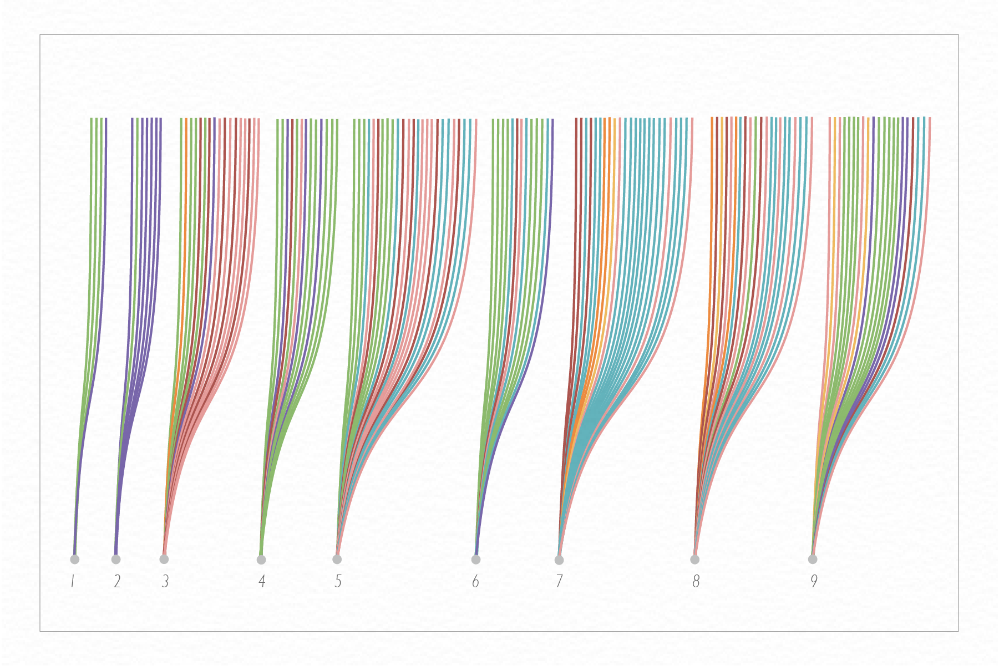
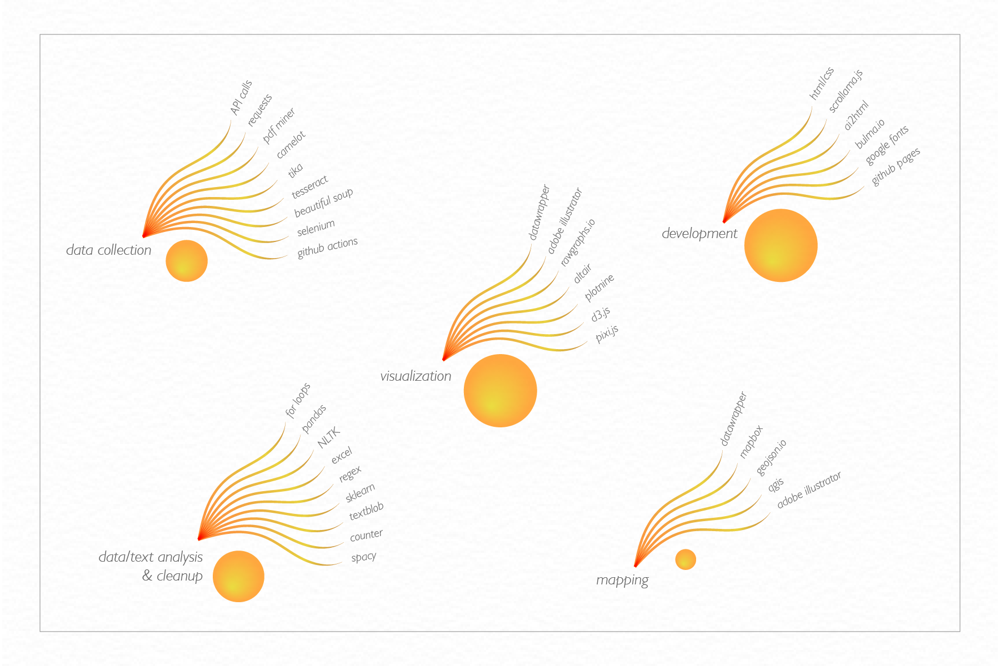
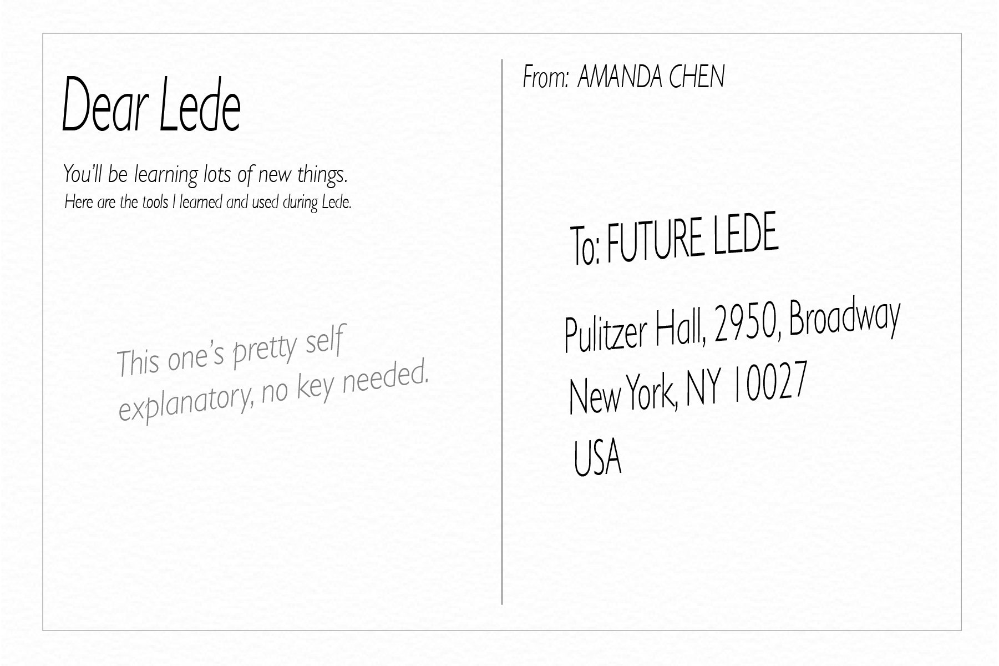
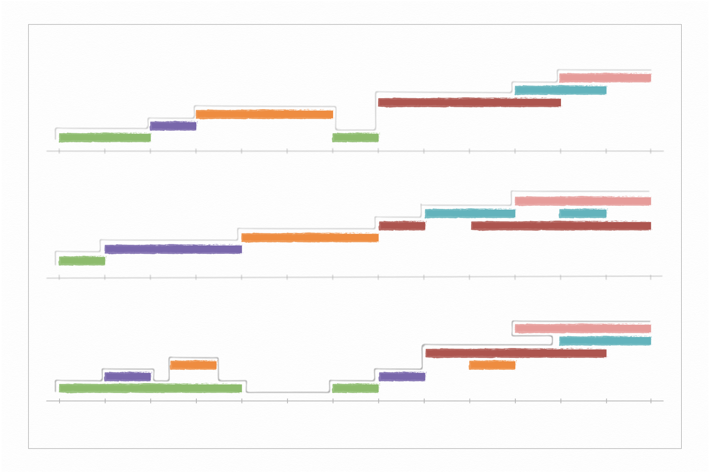
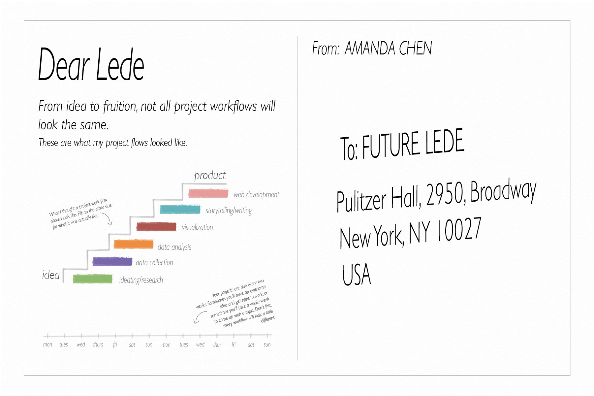
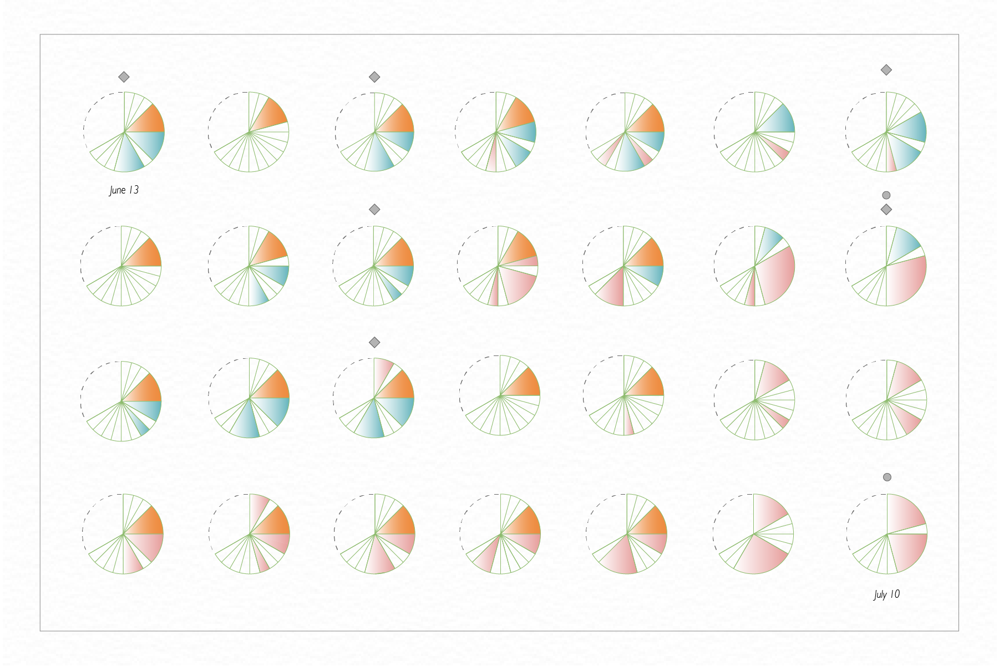
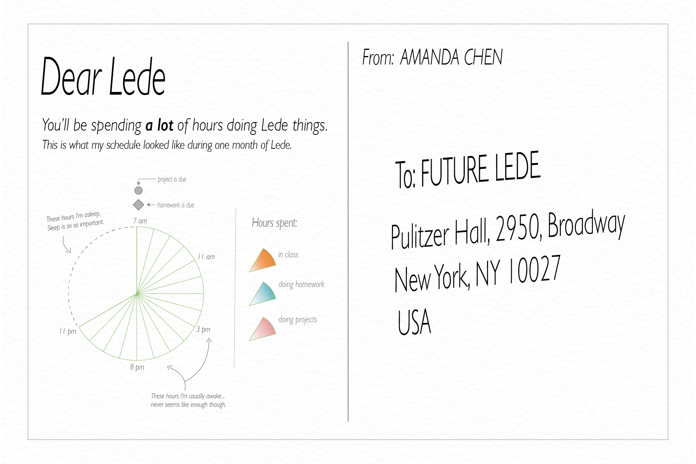

Dear Lede
A reflection of my time at Lede. For future Lede students, these postcards are visualizations and lessons from my experience as a Lede 2022 student.
By Amanda Chen, inspired by Dear Data
Weeks
Every week at Lede is different. You’ll first start off learning the basics of python and a lot of miscellaneous things to get you all set up. Then, all of the fun with data analysis and clean-up begins. From for loops, lists and dictionaries all the way to pandas and data frames, you’ll learn how to take data and shape it into a story to tell. The weeks get a little crazier as d3.js, scrollytelling, scraping, and more get added into the mix, but it’s all a lot of fun and you’ll learn incredible amounts. Here are the tools I used each week—about 90% of them were new to me!

Toolbox
From data collection, to analysis, visualization and development, there are a lot of tools involved with creating data-driven stories end to end. For quite literally any question, problem, or bug you encounter, chances are there is already a tool, library, repository, or youtube video (shout out to Soma, my favorite youtuber!) out there for you. We’ve learned over 35 tools in class, but we’ve only scratched the surface.
 Workflow
Every project workflow will be a little different. Sometimes ideas come easy and you’ll get right to work. Other times, you’ll hit a dead end and will need to pivot, or come up with a new topic. Either way, no need to fret, no workflow will be perfect, and learning to be flexible is vital.
 Time
You’ll be spending a ton of hours on Lede, and it probably won’t feel like enough. Don’t worry, you’ll learn to prioritize what you are most interested in learning, and it’s okay if you can’t get to everything! The lessons and videos will live on the internet for as long as the internet exists, and you can always go back to them when the time comes.
 Teamwork
Something I am still visualizing, but did not want to leave out: teamwork. There is only so much you can learn when you are learning alone. Take advantage of your fellow students who are going through the same thing as you, TAs who have probably already made the same mistake as you, and Soma who just knows everything somehow (??). The individuals you will meet will have a wealth of knowledge, creativity, and passion—use that to your advantage, and who knows what brilliant ideas might come out of it.
Shout out to my 2022 cohort for all the late nights spent figuring out homework and project issues, and special shout out to Aishi for helping me see what this Dear Lede project could be.